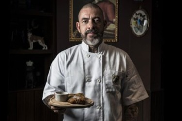
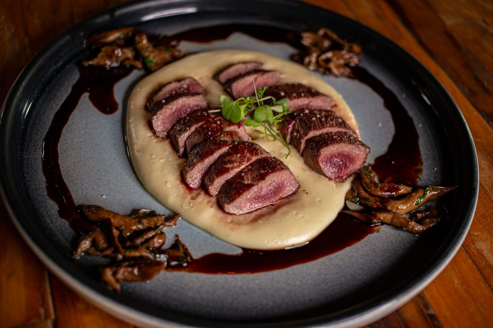
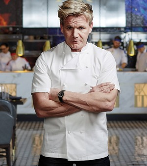
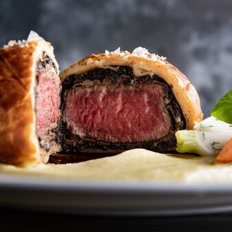
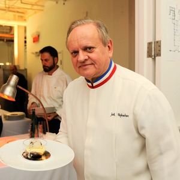
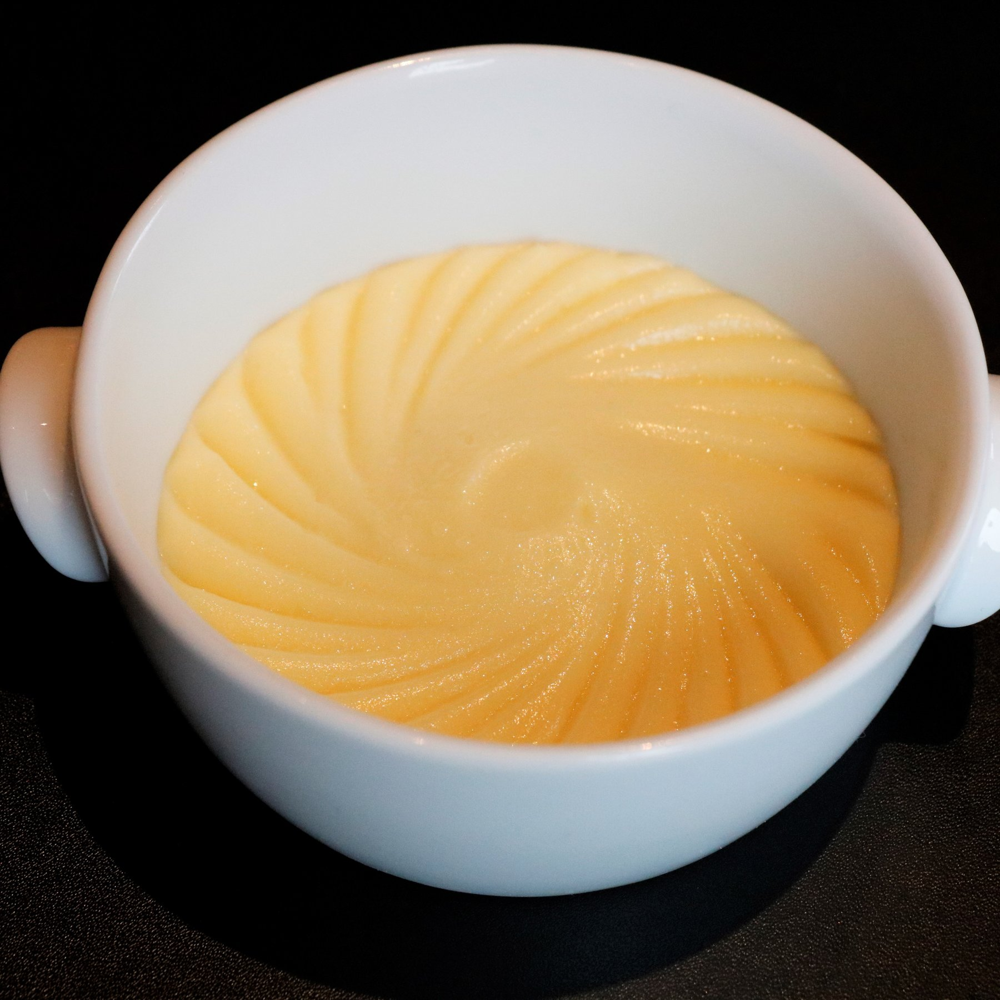

Culinary Fusion Fest: A Global Gastronomic Adventure
Culinary Fusion Fest
Imagine a culinary adventure that transports your taste buds across continents, offering the diverse and delectable flavors of the world all on one plate. Welcome to the "Culinary Fusion Fest," a food lover's paradise where global gastronomy takes center stage.
At this extraordinary event, food becomes a universal language, spoken through a myriad of dishes that tell the story of cultures and traditions from around the globe. Whether you're a seasoned foodie or simply a lover of good food, the Culinary Fusion Fest promises an unforgettable journey through the world of cuisine.
George Brown College, 160 Kendal Ave, Toronto, ON M5R 1M3
Guest Chefs
Savor a culinary extravaganza featuring world-renowned chefs. Henrique Forgaca's "Steak Tartare of Mignon," Gordon Ramsay's "Beef Wellington," and Chef Joel's "Pommes Purée" promise a feast of flavors.

Henrique Aranha Fogaça is a Brazilian chef, businessman, skateboarder and singer, known for being one of the judges on the Brazilian version of the culinary talent show MasterChef, broadcast by Band. Furthermore, Fogaça is the vocalist and composer of the hardcore band Oitão. Hover to see his special dish!


Gordon Ramsay, (born November 8, 1966, Johnstone, Scotland), Scottish chef and restaurateur known for his highly acclaimed restaurants and cookbooks but perhaps best known in the early 21st century for the profanity and fiery temper that he freely displayed on television cooking programs.


Since the mid-1980s, he has been called the primus inter pares of Paris "three star" chefs for his work both at Jamin and at his eponymous restaurant. Robuchon has been known for the relentless perfectionism of his cuisine he said there is no such thing as the perfect meal – one can always do better.

Food Gallery
Our Gallery Section is a feast for the eyes. Explore an array of tantalizing images from past events and behind-the-scenes glimpses of your favorite chefs foods. Click on any image to experience a larger-than-life view.